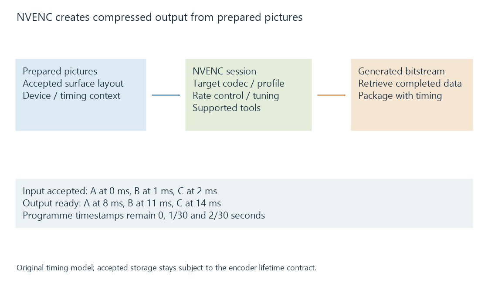

NVIDIA NVENC
NVENC is NVIDIA’s dedicated video-encoding engine, creating a supported compressed representation from prepared input pictures through its encoder API.
NVENC is NVIDIA's dedicated video-encoding engine. It takes suitable prepared pictures and creates the selected compressed video representation.
Source reconstruction belongs to NVDEC or another decoder. Scaling, tone mapping and subtitle preparation belong to the selected processing route.
Configure the representation being created
The encoder needs a supported target codec configuration, picture dimensions, input surface representation and encoding choices. Capability queries identify the features available through the selected hardware/API path.
Preset, tuning, rate control and picture-order choices then describe how the implementation should create that output. A setting name belongs to this encoder's contract; it is not a universal quality unit shared by every encoder.

An Emby log naming h264_nvenc identifies a NVIDIA-oriented H.264 encoder wrapper. The preceding decoder and filters still need their own evidence.
Prepared input can require adjacent work
NVENC is distinct from CUDA compute cores, while its input and optional processing can involve other GPU work.
SDK 13.1, for example, describes preparation of traditional pitch-linear input and an alternative compatible block-linear CUDA-array path. The documented layouts have different preparation requirements.
This provides a concrete reason to keep the engine and its surrounding route separate. A compute activity counter can describe input preparation or another filter while the dedicated encoder performs compression.
The input lifetime extends through consumption
The application supplies or registers suitable input storage and retrieves the encoder's generated output through the chosen API mode.
Consider an original selected timeline:
| Picture | Input accepted at wall time | Output ready at wall time | Programme presentation time |
|---|---|---|---|
| A | 0 ms | 8 ms | 0 s |
| B | 1 ms | 11 ms | 1/30 s |
| C | 2 ms | 14 ms | 2/30 s |
The times are invented. They show input acceptance, output readiness and media timestamps as three different coordinates.
An input picture cannot be overwritten merely because submission returned. Its storage remains subject to the encoder's ownership/completion contract. Generated output also needs to be obtained and passed to the output packaging stage.
Analysis or frame reordering can add other relationships between inputs and bitstream availability. The application follows the mode supported on its platform rather than assuming one notification mechanism everywhere.
Output still needs media packaging
NVENC creates encoded video, not the entire server session. The application combines encoded output with selected audio, timing and the intended container or streaming delivery.
A session using NVENC can consequently wait for an upstream filter or for output coordination. The pipeline explanation connects that encoder work to the pictures and delivery deadlines around it.
See Also
- NVIDIA NVDEC
- NVIDIA CUDA in media processing
- Hardware encoding and software encoding
- The hardware decode-filter-encode pipeline
- Video Bitrate
- Video Encoder Presets